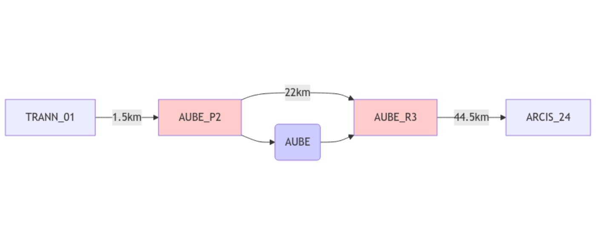
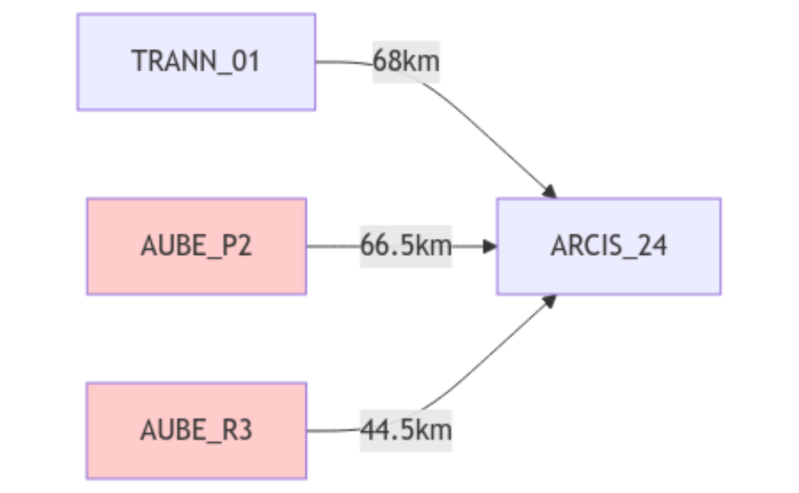
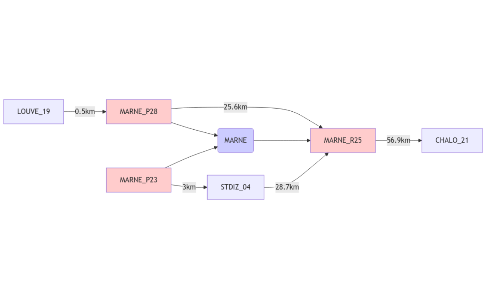
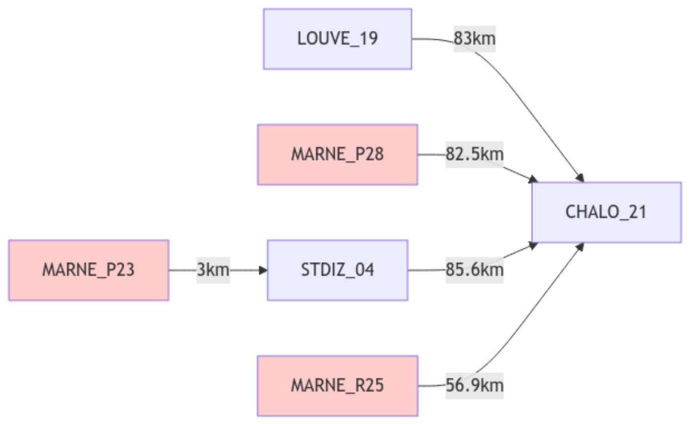
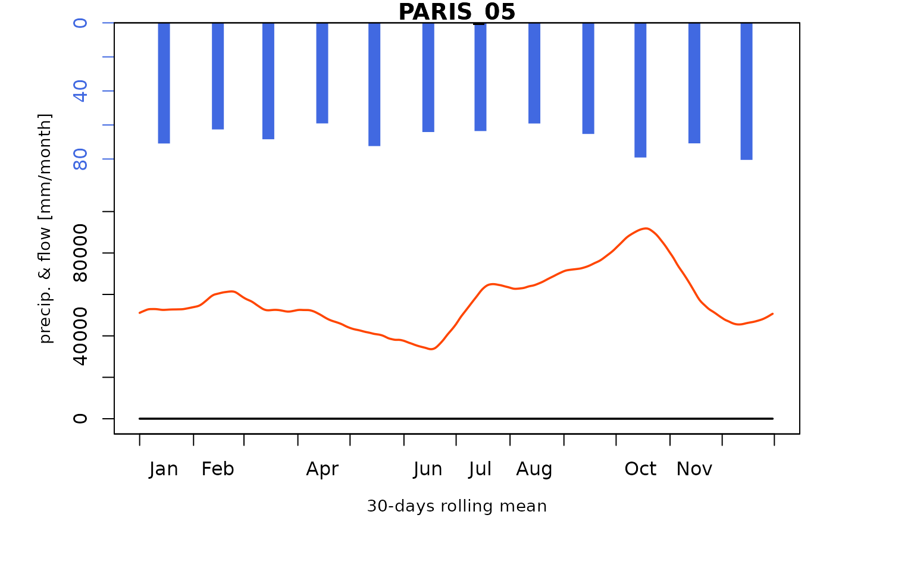
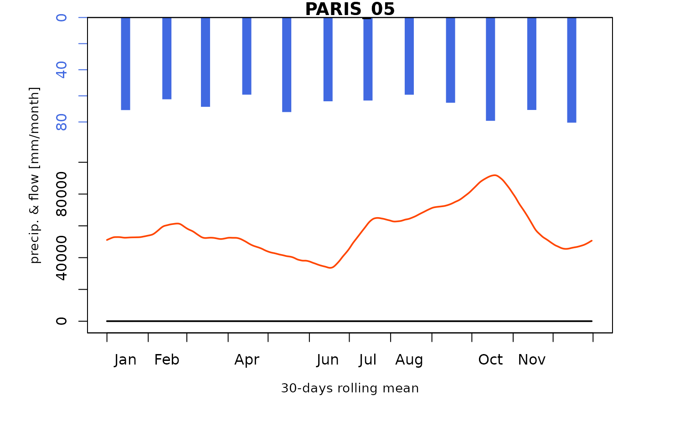
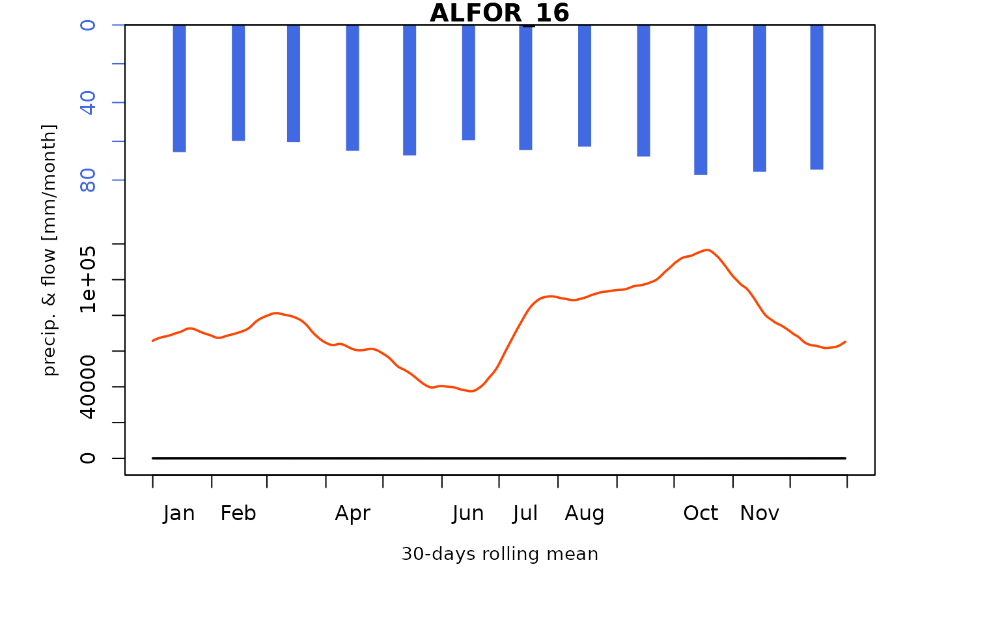
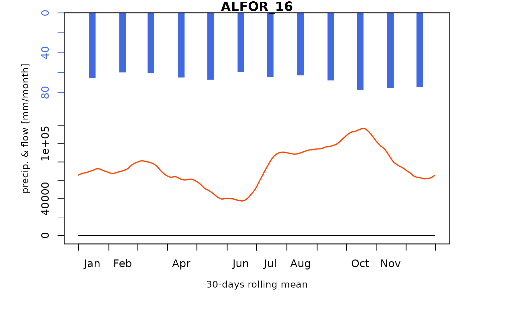
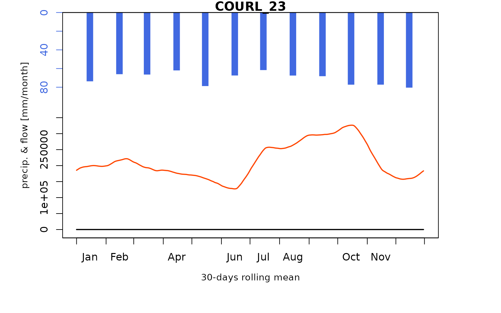
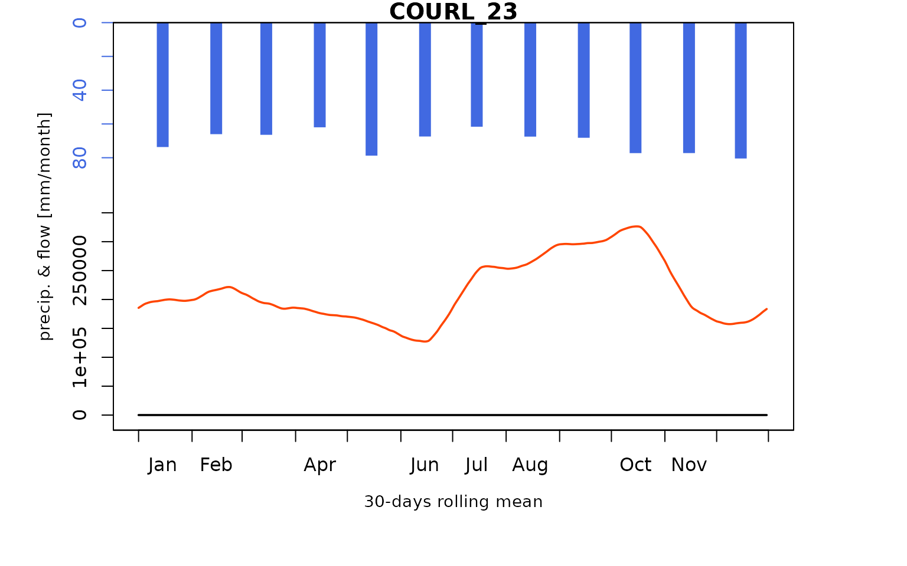

Seine_04: Running open-loop influenced flow semi-distributed model network
David Dorchies
Source:vignettes/seinebasin/V04_Open-loop_influenced_flow.Rmd
V04_Open-loop_influenced_flow.Rmd
library(airGRiwrm)
#> Loading required package: airGR
#>
#> Attaching package: 'airGRiwrm'
#> The following objects are masked from 'package:airGR':
#>
#> Calibration, CreateCalibOptions, CreateInputsCrit,
#> CreateInputsModel, CreateRunOptions, RunModelIntegration of the reservoir connections into the model
The aim of this vignette is to add reservoir connections to the Seine River model previously set up. A complete description of the reservoir system of the Seine River can be found in Dehay (2012)
Add connections to the reservoirs in the gauging station network
Because of the airGR SD model structure, the topology of the network will differ between the physical one and the modeled one. In the following, we provide details for each of the 4 lakes, and then we present the complete SD network.
First, the physical topology of the Aube lake is represented below:

In the SD model, we do not simulate intermediate flows as well as the reservoir in the catchment. As a result, an equivalent topology compatible with airGR will be the one below:

AUBE_P2 will propagate negative flows downstream
(reservoir inflows) while AUBE_R3 will propagate positive
flows downstream (reservoir releases).
The configuration on the lake Seine is similar:
which can be translated as:
The Pannecière lake is an inline reservoir:
We can keep the same structure to model it. PANNEC_R
corresponds to the flow released by the Pannecière lake, it is acting as
an upstream node which means that the flow simulated at
CHAUM_07 is no longer routed to downstream.
The Marne lake can be mapped as:

And can be modeled as:

Hence the topological connection to the reservoirs is described in the model as below:
reservoir_connections <- read.table(
file = system.file("seine_data", "network_reservoir_connections.txt", package = "seinebasin"),
sep = ";", header = TRUE
)
reservoir_connections
#> id length down
#> 1 AUBE-_P2 66500 ARCIS_24
#> 2 AUBE-_R3 44500 ARCIS_24
#> 3 MARNE_P23 3000 STDIZ_04
#> 4 MARNE_P28 82420 CHALO_21
#> 5 MARNE_R25 56870 CHALO_21
#> 6 PANNEC_R 153074 GURGY_02
#> 7 SEINE_P7 73766 MERY-_22
#> 8 SEINE_R8 41766 MERY-_22Reservoir connections are added to the GRiwrm object:
reservoir_connections$length <- reservoir_connections$length / 1000
reservoir_connections$model <- NA
reservoir_connections$area <- NA
load("_cache/V01.RData")
seine_nodes <- seine_nodes[, c("id_sgl", "distance_aval", "id_aval", "model", "area")]
names(seine_nodes)[1:3] <- names(reservoir_connections)[1:3]
seine_nodes2 <- rbind(seine_nodes, reservoir_connections)
# Insert PANNEC_R between CHAUM_07 and GURGY_02
seine_nodes2$down[seine_nodes2$id == "CHAUM_07"] <- "PANNEC_R"
seine_nodes2$length[seine_nodes2$id == "CHAUM_07"] <- 0
griwrm2 <- CreateGRiwrm(seine_nodes2)
plot(griwrm2)Loading reservoir observation time series
Description of the files, the columns and the type of connection (inlet / outlet) are defined in the list below:
lCfgReservoirs <- jsonlite::read_json(system.file("seine_data", "config_reservoirs.json", package = "seinebasin"))
str(lCfgReservoirs)
#> List of 4
#> $ Aube :List of 2
#> ..$ file : chr "Obs_Aube_1987-2008.txt"
#> ..$ connections:List of 2
#> .. ..$ AUBE-_P2:List of 2
#> .. .. ..$ col : chr "Q_prise_m3s"
#> .. .. ..$ type: chr "in"
#> .. ..$ AUBE-_R3:List of 2
#> .. .. ..$ col : chr "Q_restitution_total_m3s"
#> .. .. ..$ type: chr "out"
#> $ Marne :List of 2
#> ..$ file : chr "Obs_Marne_1973-2008.txt"
#> ..$ connections:List of 3
#> .. ..$ MARNE_P23:List of 2
#> .. .. ..$ col : chr "Q_prise_Marne_m3s"
#> .. .. ..$ type: chr "in"
#> .. ..$ MARNE_P28:List of 2
#> .. .. ..$ col : chr "Q_prise_Blaise_m3s"
#> .. .. ..$ type: chr "in"
#> .. ..$ MARNE_R25:List of 2
#> .. .. ..$ col : chr "Q_restitution_total_m3s"
#> .. .. ..$ type: chr "out"
#> $ Panneciere:List of 2
#> ..$ file : chr "Obs_Panneciere_1949-2008.txt"
#> ..$ connections:List of 1
#> .. ..$ PANNEC_R:List of 2
#> .. .. ..$ col : chr "Q_aval_bassin_m3s"
#> .. .. ..$ type: chr "out"
#> $ Seine :List of 2
#> ..$ file : chr "Obs_Seine_1965-2008.txt"
#> ..$ connections:List of 2
#> .. ..$ SEINE_P7:List of 2
#> .. .. ..$ col : chr "Q_prise_m3s"
#> .. .. ..$ type: chr "in"
#> .. ..$ SEINE_R8:List of 2
#> .. .. ..$ col : chr "Q_restitution_total_m3s"
#> .. .. ..$ type: chr "out"Then, we load observation data for each reservoir and each connection:
Create the InputsModel object
InputsModel2 <- CreateInputsModel(griwrm2, DatesR, Precip, PotEvap, Qreservoirs)
#> CreateInputsModel.GRiwrm: Processing sub-basin TRANN_01...
#> CreateInputsModel.GRiwrm: Processing sub-basin STDIZ_04...
#> CreateInputsModel.GRiwrm: Processing sub-basin BAR-S_06...
#> CreateInputsModel.GRiwrm: Processing sub-basin CHAUM_07...
#> CreateInputsModel.GRiwrm: Processing sub-basin CUSSY_08...
#> CreateInputsModel.GRiwrm: Processing sub-basin STGER_09...
#> CreateInputsModel.GRiwrm: Processing sub-basin GUILL_10...
#> CreateInputsModel.GRiwrm: Processing sub-basin AISY-_11...
#> CreateInputsModel.GRiwrm: Processing sub-basin EPISY_14...
#> CreateInputsModel.GRiwrm: Processing sub-basin MONTR_18...
#> CreateInputsModel.GRiwrm: Processing sub-basin LOUVE_19...
#> CreateInputsModel.GRiwrm: Processing sub-basin LASSI_20...
#> CreateInputsModel.GRiwrm: Processing sub-basin VITRY_25...
#> CreateInputsModel.GRiwrm: Processing sub-basin GURGY_02...
#> CreateInputsModel.GRiwrm: Processing sub-basin BRIEN_03...
#> CreateInputsModel.GRiwrm: Processing sub-basin CHABL_12...
#> CreateInputsModel.GRiwrm: Processing sub-basin CHALO_21...
#> CreateInputsModel.GRiwrm: Processing sub-basin MERY-_22...
#> CreateInputsModel.GRiwrm: Processing sub-basin ARCIS_24...
#> CreateInputsModel.GRiwrm: Processing sub-basin NOGEN_13...
#> CreateInputsModel.GRiwrm: Processing sub-basin NOISI_17...
#> CreateInputsModel.GRiwrm: Processing sub-basin COURL_23...
#> CreateInputsModel.GRiwrm: Processing sub-basin MONTE_15...
#> CreateInputsModel.GRiwrm: Processing sub-basin ALFOR_16...
#> CreateInputsModel.GRiwrm: Processing sub-basin PARIS_05...Run simulation with naturalized flow parameters
How to handle former upstream sub-basins with upstream flows ?
A lag parameter is now mandatory for these sub-basins. As no calibration is possible at that stage an arbitrary one will be used (1 m/s).
ParamMichel$STDIZ_04 <- c(1, ParamMichel$STDIZ_04)Run simulation
We can now run the model, using the parameters previously obtained:
RunOptions <- CreateRunOptions(
InputsModel2,
IndPeriod_Run = IndPeriod_Run
)
#> Warning in (function (FUN_MOD, InputsModel, IndPeriod_WarmUp = NULL, IndPeriod_Run, : model warm up period not defined: default configuration used
#> the year preceding the run period is used
#> Warning in (function (FUN_MOD, InputsModel, IndPeriod_WarmUp = NULL, IndPeriod_Run, : model warm up period not defined: default configuration used
#> the year preceding the run period is used
#> Warning in (function (FUN_MOD, InputsModel, IndPeriod_WarmUp = NULL, IndPeriod_Run, : model warm up period not defined: default configuration used
#> the year preceding the run period is used
#> Warning in (function (FUN_MOD, InputsModel, IndPeriod_WarmUp = NULL, IndPeriod_Run, : model warm up period not defined: default configuration used
#> the year preceding the run period is used
#> Warning in (function (FUN_MOD, InputsModel, IndPeriod_WarmUp = NULL, IndPeriod_Run, : model warm up period not defined: default configuration used
#> the year preceding the run period is used
#> Warning in (function (FUN_MOD, InputsModel, IndPeriod_WarmUp = NULL, IndPeriod_Run, : model warm up period not defined: default configuration used
#> the year preceding the run period is used
#> Warning in (function (FUN_MOD, InputsModel, IndPeriod_WarmUp = NULL, IndPeriod_Run, : model warm up period not defined: default configuration used
#> the year preceding the run period is used
#> Warning in (function (FUN_MOD, InputsModel, IndPeriod_WarmUp = NULL, IndPeriod_Run, : model warm up period not defined: default configuration used
#> the year preceding the run period is used
#> Warning in (function (FUN_MOD, InputsModel, IndPeriod_WarmUp = NULL, IndPeriod_Run, : model warm up period not defined: default configuration used
#> the year preceding the run period is used
#> Warning in (function (FUN_MOD, InputsModel, IndPeriod_WarmUp = NULL, IndPeriod_Run, : model warm up period not defined: default configuration used
#> the year preceding the run period is used
#> Warning in (function (FUN_MOD, InputsModel, IndPeriod_WarmUp = NULL, IndPeriod_Run, : model warm up period not defined: default configuration used
#> the year preceding the run period is used
#> Warning in (function (FUN_MOD, InputsModel, IndPeriod_WarmUp = NULL, IndPeriod_Run, : model warm up period not defined: default configuration used
#> the year preceding the run period is used
#> Warning in (function (FUN_MOD, InputsModel, IndPeriod_WarmUp = NULL, IndPeriod_Run, : model warm up period not defined: default configuration used
#> the year preceding the run period is used
#> Warning in (function (FUN_MOD, InputsModel, IndPeriod_WarmUp = NULL, IndPeriod_Run, : model warm up period not defined: default configuration used
#> the year preceding the run period is used
#> Warning in (function (FUN_MOD, InputsModel, IndPeriod_WarmUp = NULL, IndPeriod_Run, : model warm up period not defined: default configuration used
#> the year preceding the run period is used
#> Warning in (function (FUN_MOD, InputsModel, IndPeriod_WarmUp = NULL, IndPeriod_Run, : model warm up period not defined: default configuration used
#> the year preceding the run period is used
#> Warning in (function (FUN_MOD, InputsModel, IndPeriod_WarmUp = NULL, IndPeriod_Run, : model warm up period not defined: default configuration used
#> the year preceding the run period is used
#> Warning in (function (FUN_MOD, InputsModel, IndPeriod_WarmUp = NULL, IndPeriod_Run, : model warm up period not defined: default configuration used
#> the year preceding the run period is used
#> Warning in (function (FUN_MOD, InputsModel, IndPeriod_WarmUp = NULL, IndPeriod_Run, : model warm up period not defined: default configuration used
#> the year preceding the run period is used
#> Warning in (function (FUN_MOD, InputsModel, IndPeriod_WarmUp = NULL, IndPeriod_Run, : model warm up period not defined: default configuration used
#> the year preceding the run period is used
#> Warning in (function (FUN_MOD, InputsModel, IndPeriod_WarmUp = NULL, IndPeriod_Run, : model warm up period not defined: default configuration used
#> the year preceding the run period is used
#> Warning in (function (FUN_MOD, InputsModel, IndPeriod_WarmUp = NULL, IndPeriod_Run, : model warm up period not defined: default configuration used
#> the year preceding the run period is used
#> Warning in (function (FUN_MOD, InputsModel, IndPeriod_WarmUp = NULL, IndPeriod_Run, : model warm up period not defined: default configuration used
#> the year preceding the run period is used
#> Warning in (function (FUN_MOD, InputsModel, IndPeriod_WarmUp = NULL, IndPeriod_Run, : model warm up period not defined: default configuration used
#> the year preceding the run period is used
#> Warning in (function (FUN_MOD, InputsModel, IndPeriod_WarmUp = NULL, IndPeriod_Run, : model warm up period not defined: default configuration used
#> the year preceding the run period is used
OutputsModels2 <- RunModel(
InputsModel2,
RunOptions = RunOptions,
Param = ParamMichel
)
#> RunModel.GRiwrmInputsModel: Processing sub-basin TRANN_01...
#> RunModel.GRiwrmInputsModel: Processing sub-basin STDIZ_04...
#> Warning in RunModel_Lag(InputsModel, RunOptions, Param[1], OutputsModel): 139
#> time steps with negative flow, set to zero.
#> RunModel.GRiwrmInputsModel: Processing sub-basin BAR-S_06...
#> RunModel.GRiwrmInputsModel: Processing sub-basin CHAUM_07...
#> RunModel.GRiwrmInputsModel: Processing sub-basin CUSSY_08...
#> RunModel.GRiwrmInputsModel: Processing sub-basin STGER_09...
#> RunModel.GRiwrmInputsModel: Processing sub-basin GUILL_10...
#> RunModel.GRiwrmInputsModel: Processing sub-basin AISY-_11...
#> RunModel.GRiwrmInputsModel: Processing sub-basin EPISY_14...
#> RunModel.GRiwrmInputsModel: Processing sub-basin MONTR_18...
#> RunModel.GRiwrmInputsModel: Processing sub-basin LOUVE_19...
#> RunModel.GRiwrmInputsModel: Processing sub-basin LASSI_20...
#> RunModel.GRiwrmInputsModel: Processing sub-basin VITRY_25...
#> RunModel.GRiwrmInputsModel: Processing sub-basin GURGY_02...
#> RunModel.GRiwrmInputsModel: Processing sub-basin BRIEN_03...
#> RunModel.GRiwrmInputsModel: Processing sub-basin CHABL_12...
#> RunModel.GRiwrmInputsModel: Processing sub-basin CHALO_21...
#> RunModel.GRiwrmInputsModel: Processing sub-basin MERY-_22...
#> Warning in RunModel_Lag(InputsModel, RunOptions, Param[1], OutputsModel): 15
#> time steps with negative flow, set to zero.
#> RunModel.GRiwrmInputsModel: Processing sub-basin ARCIS_24...
#> RunModel.GRiwrmInputsModel: Processing sub-basin NOGEN_13...
#> RunModel.GRiwrmInputsModel: Processing sub-basin NOISI_17...
#> RunModel.GRiwrmInputsModel: Processing sub-basin COURL_23...
#> RunModel.GRiwrmInputsModel: Processing sub-basin MONTE_15...
#> RunModel.GRiwrmInputsModel: Processing sub-basin ALFOR_16...
#> RunModel.GRiwrmInputsModel: Processing sub-basin PARIS_05...Compare modeled flows with observed flows
Load observed flows
data(QOBS)Comparison with simulated flows
We can compare these simulated flows with influenced discharge measurements:
ReduceOutputsModel <- function(OutputsModels, IndPeriod) {
items <- names(OutputsModels)
OutputsModelsOut <- sapply(items, function(x) {
OutputsModels[[x]] <- OutputsModels[[x]][IndPeriod]
})
OutputsModelsOut$StateEnd <- OutputsModels$StateEnd
class(OutputsModelsOut) <- class(OutputsModels)
return(OutputsModelsOut)
}
IndPeriod <- RunOptions[[1]]$IndPeriod_Run
IndPeriod <- IndPeriod[IndPeriod <= nrow(Qobs)]
htmltools::tagList(lapply(
colnames(Qobs),
function(x) {
Q2 <- Qobs[IndPeriod, x]
IndPeriod_Obs <- which(!is.na(Q2))
OutputsModels <- ReduceOutputsModel(OutputsModels2[[x]], IndPeriod_Obs)
plot(OutputsModels, Qobs = Q2[IndPeriod_Obs], main = x, which = c("Regime"))
}
))
#> Warning in plot.OutputsModel(OutputsModels, Qobs = Q2[IndPeriod_Obs], main = x,
#> : zeroes detected in 'Qsim': some plots in the log space will not be created
#> using all time-steps
 


 

#> Warning in plot.OutputsModel(OutputsModels, Qobs = Q2[IndPeriod_Obs], main = x,
#> : zeroes detected in 'Qsim': some plots in the log space will not be created
#> using all time-steps
 


Save data for next vignettes
save(griwrm2, ReduceOutputsModel, file = "_cache/V04.RData")